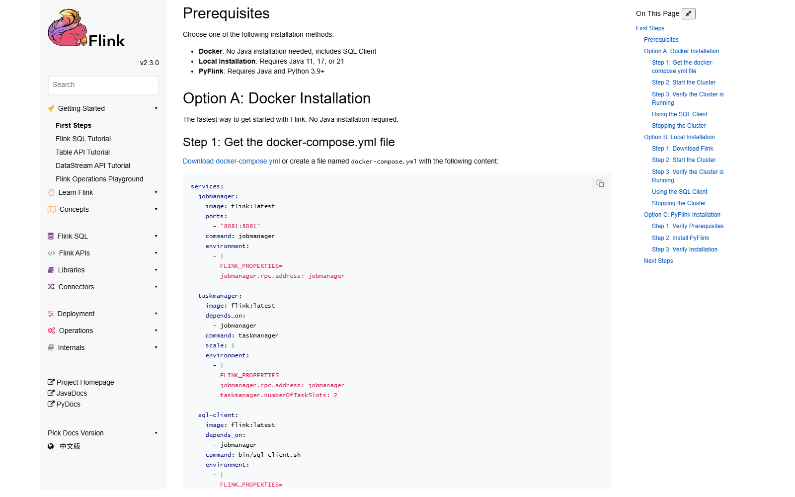
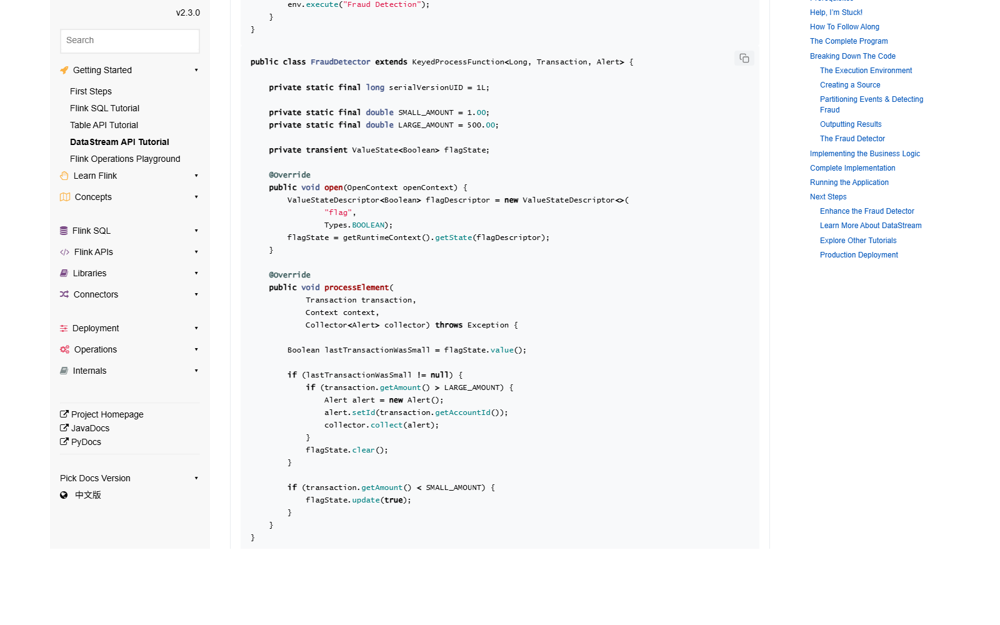

OSS PROJECT INTRO · APACHE FLINK 系列第 2 期：5 分钟跑起来
上一期我们认识了 Flink 这台"把流处理脏活内置"的引擎，这期继续——亲手把它跑起来。路线照抄官方文档：Java 11/17/21 任一在手，下载 Flink 2.3.0 解压，start-cluster.sh 起一个本地集群，浏览器打开 localhost:8081 就是 Web UI；第一条作业两条路——发行包自带的示例 jar 一条命令提交，或 Maven 脚手架生成官方反欺诈教程在 IDE 里跑；最后顺手把 Checkpoint 的第一行配置打开（默认是关的，这行值得变成肌肉记忆）。结束你能答上四个问题：本地集群怎么起、第一个作业怎么跑、Checkpoint 怎么开、第一晚报错怎么救。
Flink 本地跑起来的门槛只有两项。第一，Java。官方文档口径："You need Java 11, 17, or 21"——11、17、21 三个版本都行，2.x 把 17 作为默认与推荐版本，java -version 确认一下即可。第二，发行包。官网下载页拿 flink-2.3.0-bin-scala_2.12.tgz（后缀是发行包内部依赖的 Scala 版本，与你要写的 Java 代码无关），解压即用，Windows 建议走 WSL 或 Docker：
# 下载与解压（以 2.3.0 为例，详见官网 downloads 页）
tar -xzf flink-2.3.0-bin-scala_2.12.tgz
cd flink-2.3.0
# 目录长这样：bin 脚本 · conf 配置 · examples 自带示例认一眼三个目录：bin/ 是集群与作业的全套脚本，conf/ 是配置（2.x 主配置文件叫 conf/config.yaml），examples/ 自带一排可直接提交的示例 jar——第一个作业不用自己写就有得跑。
来源注记——nightlies.apache.org 2.3 文档 First Steps 一章（2026-09-30 核对）：Java 11/17/21 要求原文；发行包命名与下载见 flink.apache.org/downloads（2026-09-30 核对）。
./bin/start-cluster.sh
# 输出两行：Starting cluster 扮演两个角色——
# jobmanager 进程 + taskmanager 进程（本机各起一个）
./bin/stop-cluster.sh # 用完关闭打开浏览器访问 http://localhost:8081——这就是 Flink 的 Web UI：首页能看到 Available Task Slots（默认 1 个 TaskManager、1 个槽位）和 Running Jobs 列表。记住这个仪表盘，后面排障、看反压、看 Checkpoint 统计全靠它。另外发行包还带一个 sql-client.sh，一条命令进 SQL 客户端，不写 Java 也能跑流查询——exit; 退出。

路线 A，集群提交自带示例（一分钟）。发行包的 examples/streaming/ 下有一排编译好的示例 jar，官方 CLI 文档的示范命令就是对它们发的：
# 官方 CLI 文档原话示例（提交后自动返回 JobID）
./bin/flink run --detached ./examples/streaming/StateMachineExample.jar
./bin/flink list # 看运行中的作业
./bin/flink cancel $JOB_ID # 取消刷新 8081，作业出现在 Running Jobs 里，点进去能看到数据流图。换成 WordCount.jar、TopSpeedWindowing.jar 同样一条命令的事。路线 B，IDE 跑官方教程（五分钟）。官方 DataStream 教程用 Maven 脚手架生成一个信用卡反欺诈作业：
mvn archetype:generate \
-DarchetypeGroupId=org.apache.flink \
-DarchetypeArtifactId=flink-walkthrough-datastream-java \
-DarchetypeVersion=2.3.0 \
-DgroupId=frauddetection -DartifactId=frauddetection \
-Dversion=0.1 -Dpackage=frauddetection -DinteractiveMode=false生成的 FraudDetectionJob 在 IDEA 里直接跑 main 方法即可。新手第一个坑大概率在这报：NoClassDefFoundError——因为依赖里 Flink 本体是 provided 作用域（集群运行时才提供）。解法是 IntelliJ 的 Run Configuration → Modify options → 勾上 Include dependencies with "Provided" scope，官方教程原话给的就是这一招。
来源注记——2.3 官方文档 Deployment / CLI 一章与 Getting Started / DataStream API Tutorial（2026-09-30 核对）：flink run 命令、脚手架参数、provided 作用域解法均为官方原文；发行包自带 examples/streaming 下全部示例 jar（源码 flink-dist 打包口径）。
官方仓库的 WordCount 示例就是最好的第一课，骨架五步（完整源码见 flink-examples/flink-examples-streaming 模块）：
// 1. 执行环境：决定"在哪儿跑"
StreamExecutionEnvironment env =
StreamExecutionEnvironment.getExecutionEnvironment();
// 2. 数据从哪来：内置集合 / 文件 / Kafka 都是一个 fromSource/fromData
DataStream text = env.fromData(WordCountData.WORDS);
// 3. 算子链：切词成 (词, 1) —— 自己写的 FlatMapFunction
DataStream> words = text.flatMap(new Tokenizer());
// 4. 按词分组、求和：keyBy 之后 sum
words.keyBy(t -> t.f0).sum(1).print();
// 5. 提交：不调用 execute，作业不会跑
env.execute("wordcount"); 读法心法：Flink 程序是"声明式"的——你只描述数据流的形状（来源 → 变换 → 去处），什么时候并行、怎么调度、挂了怎么恢复，全是执行环境提交时由运行时决定。所以同一份代码，IDE 里 getExecutionEnvironment() 是本地小集群，flink run 提交就是真集群，代码一行不改。

上期说过 Flink 靠 Checkpoint 实现不多算不少算——但官方文档明确写着：默认是关闭的（"By default, checkpointing is disabled"）。本地玩票可以不开，往"生产"迈半步就要开。第一行配置是代码级的：
// 每 10 秒做一次快照；模式默认 exactly-once
env.enableCheckpointing(10000);
// 作业取消后保留快照，方便从检查点恢复（默认会被清理）
env.getCheckpointConfig().setExternalizedCheckpointRetention(
ExternalizedCheckpointRetention.RETAIN_ON_CANCELLATION);
// 快照写哪：配置了目录即用文件系统存储
env.configure(new Configuration()
.set(CheckpointingOptions.CHECKPOINTS_DIRECTORY, "file:///tmp/flink/ck"));三个默认值值得背下来：快照模式默认 exactly-once，超时默认 10 分钟，同时只允许 1 个进行中的快照（max concurrent 1）；间隔没有默认值，跟着 enableCheckpointing(n) 走。不想写代码，也可以在 conf/config.yaml 里配 execution.checkpointing.interval。开完之后刷新 Web UI → 作业 → Checkpoints 标签页，能看到每一次快照的大小与耗时——这个页面就是以后调优的主战场之一。
来源注记——2.3 官方文档 State & Fault Tolerance / Checkpointing 一章（2026-09-30 核对）：默认关闭、exactly-once 默认模式、10 分钟超时、max concurrent 1、外部化保留 RETAIN_ON_CANCELLATION 与 CHECKPOINTS_DIRECTORY 写法均为官方原文。
start-cluster.sh 的输出与 log/ 目录日志，十有八九是 Java 版本不在 11/17/21 之列；conf/config.yaml 里的 rest.port 再重启集群；到这里，"跑起来"的三件事全部闭环：集群在跑（8081 看得见）、作业在流（数据进出）、容错开着（快照有节奏）。第 3 期我们把这台引擎拆开——运行时架构、三层执行图、时间语义与 Watermark，把你在 UI 上看到的每个词都变成能讲清楚的概念。
每题点击选项立即反馈 · 共 3 题
1. Flink 2.3 官方文档要求的 Java 版本是？
2. IDE 里跑官方教程报 NoClassDefFoundError，官方解法是？
3. 关于 Checkpoint 的默认值，符合官方文档的是？
先说好处，它来自一个朴素的事实：集群里每个 TaskManager 的 classpath 里已经有 Flink 本体了。用户 jar 如果把 Flink 一起打进去，一个几百 KB 的业务作业会膨胀成上百 MB，集群每提交一个作业就白传输、白加载一份重复类，还可能因版本混装引发类冲突。provided 的语义正好表达这个契约："编译期我借你 API，运行期集群自己有"。这是大数据框架的通用做法（Spark、Hadoop 同款）。坑也来自同一个事实的反面：IDE 不是集群。本地 main 方法一跑，classpath 里没有"集群运行时"，provided 的 Flink 本体缺席，于是 NoClassDefFoundError 成了每个人的第一课。IDEA 的 Include dependencies with "Provided" scope 之所以是官方解法，是因为它只影响"本地运行"这一个场景，打包照旧瘦 jar——分寸感刚好。更值得记住的是这背后的一条通用判断：构建配置从来不只是技术细节，它是"开发环境与运行环境的边界声明"。看到 provided 就该条件反射地想到——这个依赖由目标环境提供，我的本地运行模拟的是集群，所以要么让 IDE 借来，要么干脆用本地集群模式跑。理解了边界，坑就不再是坑，而是设计。
Checkpoint 间隔是恢复速度与运行开销之间的旋钮。设得太密（比如 1 秒）：单次快照可能还没做完下一次又要开始，官方默认"同时只允许 1 个进行中"就是为了防这种背靠背——结果是一直在快照、吞吐上不去；状态大的作业（RocksDB 几十 GB）每秒落盘一次，磁盘和网络先扛不住。设得太疏（比如 10 分钟）：平时确实省，但故障恢复要回放最长 10 分钟的数据——对计费、对账类场景，回放期间下游一直看旧数，业务上可能不可接受，而且一次未完成快照赶上故障就得整段重来。选间隔的框架四步：第一步问业务能容忍丢/重放多少数据，得出上限（比如最多 1 分钟）；第二步看状态大小与单次快照耗时，用 Web UI 的 Checkpoints 页实测，间隔至少留出数倍于快照耗时的余量；第三步看源端可重放性——Kafka 这类可按 offset 回溯的源，疏一点也安全，不可重放的源再密也救不了；第四步留 min-pause 防止快照挤占计算。经验起点是 30 秒到 5 分钟之间，用监控数据说话，别拍脑袋。一句话：间隔不是性能参数，是一致性参数——先定恢复口径，再谈开销。
带走这五句话：
start-cluster.sh，Web UI 在 localhost:8081——作业、异常、Checkpoint 统计都在这看；examples/streaming/*.jar 一条 flink run 提交；或 Maven 脚手架跑官方反欺诈教程（IDE 记得勾 provided 依赖）；enableCheckpointing(n) 打开，模式默认 exactly-once、超时默认 10 分钟、并发默认 1；下期预告：第 3 期《核心概念与整体架构》——JobManager 与 TaskManager 怎么分工，StreamGraph 到 ExecutionGraph 三层图怎么生成，Event Time 与 Watermark 怎么把乱序治住，状态后端怎么选，窗口模型怎么搭。
Primary source：Apache Flink 官方文档 2.3（nightlies.apache.org）——本期命令、脚手架参数、默认值均出自官方文档 First Steps / CLI / Checkpointing 章节（v2.3.0，2026-09-30 核对）；下载见 flink.apache.org/downloads，示例源码见 github.com/apache/flink flink-examples。